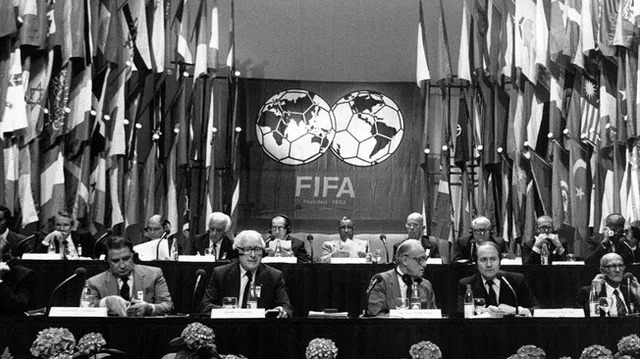

Orígenes de la FIFA
Fundación y propósito
La Federación Internacional de Fútbol Asociación (FIFA) fue establecida el 21 de mayo de 1904 en París. Su objetivo principal era estandarizar las reglas del fútbol y fomentar la cooperación internacional. Los países fundadores incluyeron Francia, Bélgica, Dinamarca, Países Bajos, España, Suecia y Suiza, quienes compartían la visión de un deporte organizado globalmente.
En aquella época, el fútbol ya se jugaba ampliamente en Europa, pero las reglas no estaban unificadas, lo que generaba confusión y conflictos entre equipos de diferentes países. La fundación de la FIFA ayudó a establecer un marco común que permitió la organización de competiciones internacionales y la expansión del deporte.
Primeros años de historia
La FIFA experimentó un crecimiento constante desde su fundación. Su primera gran hazaña fue organizar la Copa Mundial de 1930 en Uruguay. Esto no solo consolidó su papel en el fútbol mundial, sino que sentó las bases para el torneo más visto y celebrado del planeta.
Durante la década de 1920, la FIFA enfrentó desafíos financieros y logísticos, pero su perseverancia permitió el desarrollo de un sistema sólido de federaciones afiliadas. En 1928, se aprobó la creación de la Copa Mundial, la cual marcaría un antes y un después en la historia del deporte.
- Fundación: 21 de mayo de 1904
- Sede inicial: París, Francia
- Primer presidente: Robert Guérin
- Miembros fundadores: Francia, Bélgica, Dinamarca, Países Bajos, España, Suecia, Suiza
Eventos clave
| Año | Evento Clave |
|---|---|
| 1904 | Fundación de la FIFA en París |
| 1928 | Aprobación para organizar la Copa Mundial |
| 1930 | Primera Copa Mundial en Uruguay |
| 1954 | FIFA traslada su sede a Zúrich, Suiza |
Influencia y legado
Hoy en día, la FIFA es una de las organizaciones deportivas más influyentes del mundo. Supervisa competiciones en todos los continentes y continúa promoviendo el fútbol como una herramienta para la unidad, el respeto y el desarrollo social. Con más de 200 federaciones nacionales afiliadas, la FIFA ha transformado el fútbol en un fenómeno global que trasciende culturas y fronteras.
Además de los torneos, la FIFA impulsa programas de desarrollo juvenil, formación de árbitros, promoción del fútbol femenino y lucha contra la discriminación y el racismo en el deporte. Su sede en Zúrich es un centro neurálgico desde donde se coordinan todas estas acciones.